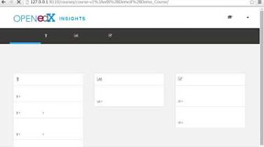
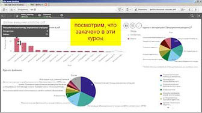

Варианты сотрудничества:
"Обслуживание" (оплата за услуги devOPs: 23 контейнеров) "Обучение" (оплата за 72а.ч. курса обучения) "Разработка" (почасовая)Наши проекты:
Системы аналитики курсов:
edX Insights: 
Qlik Sense: 
Жду Ваших предложений!